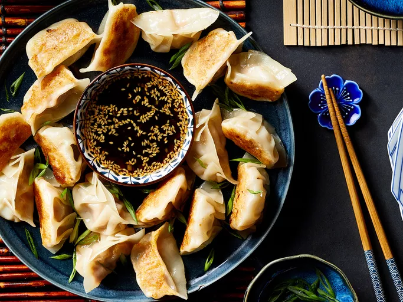

Dumplings

Description
Have you ever wanted to make your own Chinese dumplings like the ones at the restaurant? Here's a recipe from Liana Cafe House in Seattle to do just that. Enjoy!
Courtesy of Allrecipes.
Ingredients
Dipping Sauce:
- ½ cup soy sauce
- 1 tablespoon seasoned rice vinegar
- 1 tablespoon finely chopped Chinese chives
- 1 tablespoon sesame seeds
- 1 teaspoon chile-garlic sauce (such as Sriracha)
Dumplings:
- 1 pound ground pork
- 3 cloves garlic, minced
- 1 large egg, beaten
- 2 tablespoons finely chopped Chinese chives
- 2 tablespoons soy sauce
- 1 ½ tablespoons sesame oil
- 1 tablespoon minced fresh ginger
- 50 dumpling wrappers
- ½ cup vegetable oil for frying, or as needed
Directions
- Prepare dipping sauce: Combine soy sauce, rice vinegar, chives, sesame seeds, and chile sauce in a small bowl. Set aside.
- Prepare dumplings: Mix pork, garlic, egg, chives, soy sauce, sesame oil, and ginger in a large bowl until thoroughly combined.
- Place a dumpling wrapper on a lightly floured work surface and spoon about 1 tablespoon of the filling in the middle.
- Wet the edge with a little water and crimp together forming small pleats to seal the dumpling. Repeat to form remaining dumplings.
- Heat 1 to 2 tablespoons vegetable oil in a large skillet over medium-high heat. Place 8 to 10 dumplings in the pan and cook until browned, about 2 minutes per side.
- Pour in 1 cup of water; cover and cook until the dumplings are tender and pork is cooked through, about 5 minutes.
- Repeat to cook remaining dumplings, adding more oil and water for each batch.
- Serve dumplings with dipping sauce.